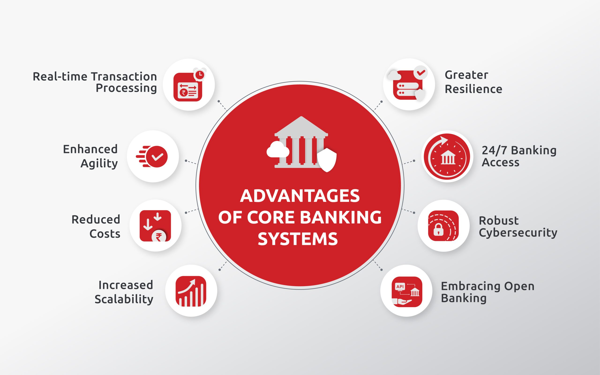
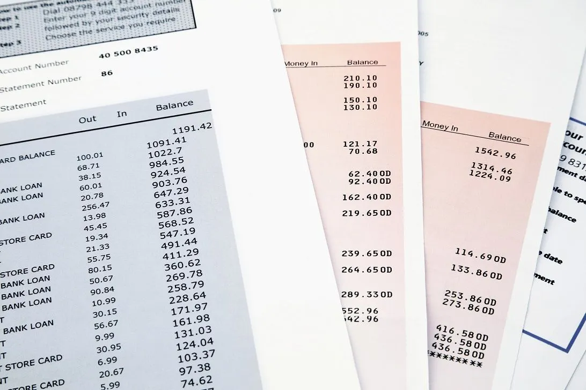
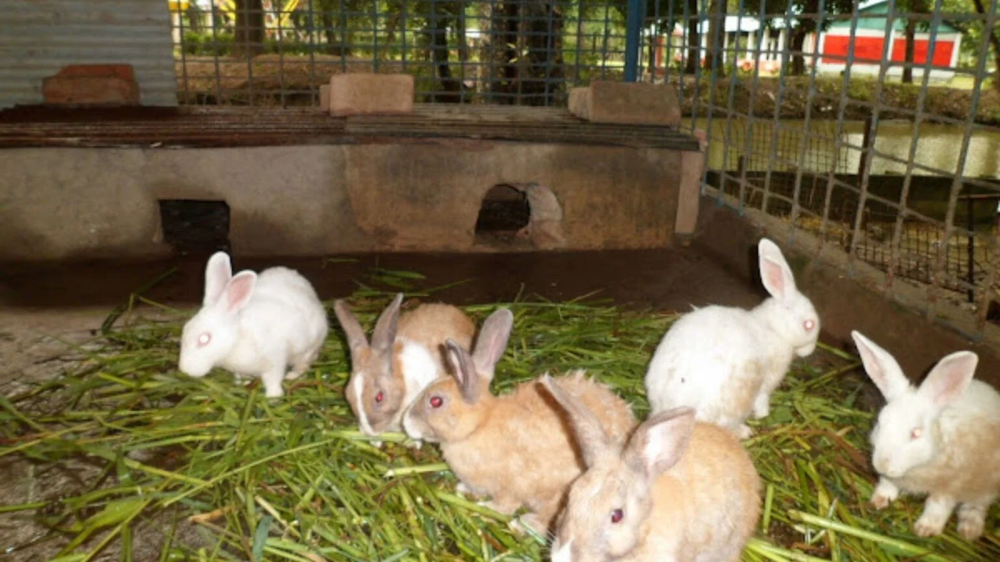
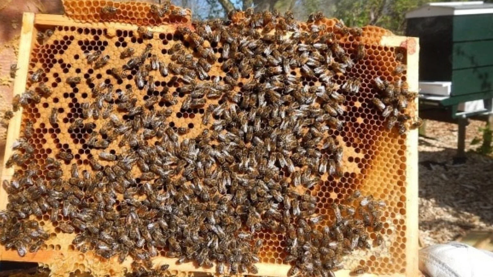
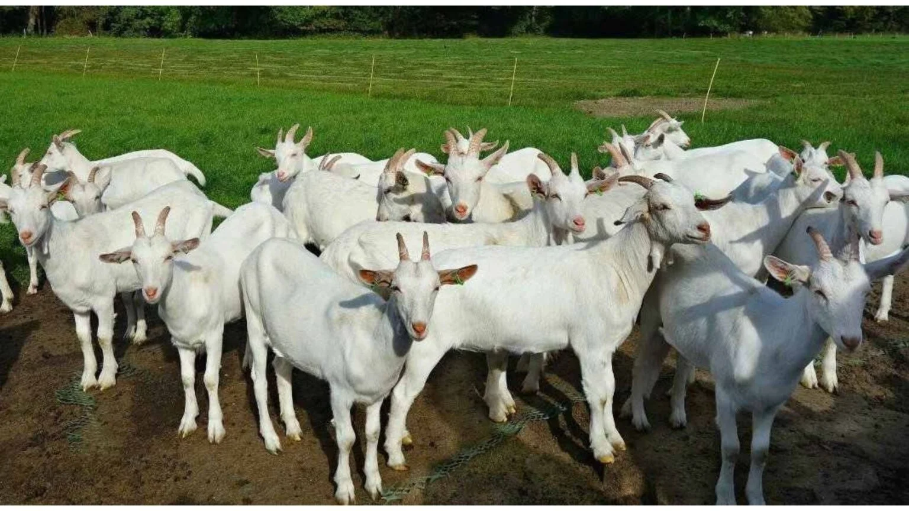
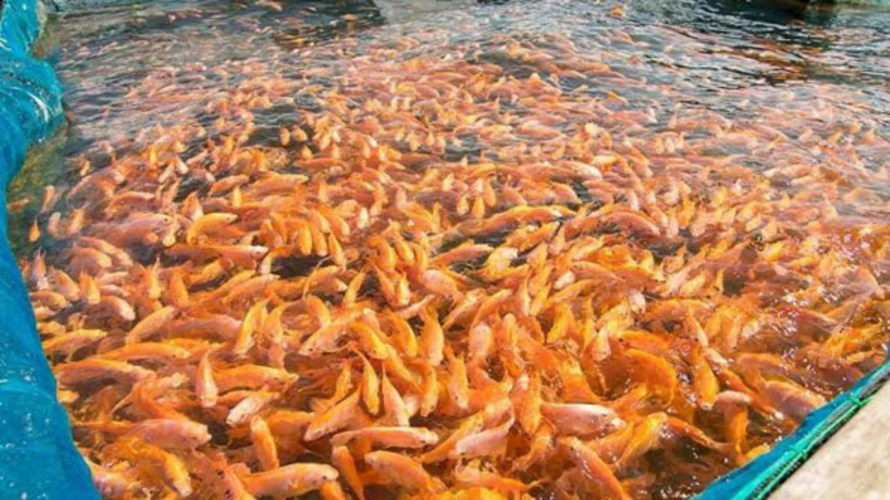
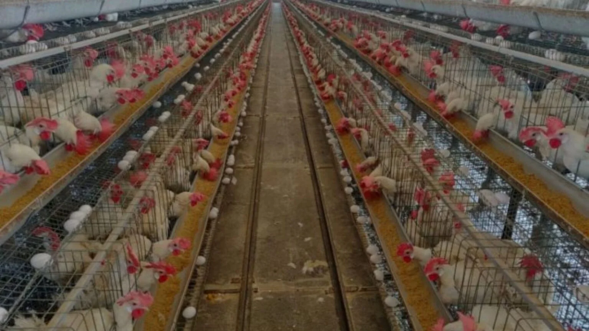
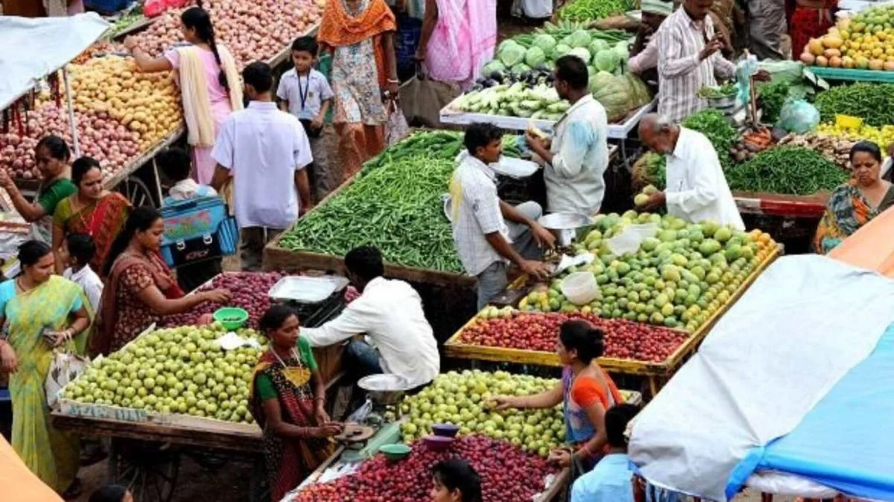

The Karakulam Co-operative Society was registered on 03/06/1950 and its functioning was started on 01/08/1950. The founder of this organization was Mr. Velappan Nair and also he was the first president of this organization. The Karakulam Co-operative Society has its working jurisdiction that covers the whole area of Karakulam block. The society has its headquarters at Karakulam.
Service
Banking
- Various types of loan with nominal interest Rates.
- Deposit facility with multiple turner and high interest rate options
- Monthly and group deposit schemes.
- Special packages for senior citizen and SHG.
- Fully computerized accounting.
- Centeralized banking facility
- Computerized report generation and statutory statements.
- SMS services for transactions and intimations.
- Fund transfer facility in intra bank.
- Fund transfer facility in inter bank.
- Highly secured and reliable mobile app for customers.
- Secured doorstep banking facility through digitalization.
- Locker facility.
Introducing our exceptional Deposit Facility, designed to meet your financial goals with flexibility and high returns. Choose from multiple term options to fit your timeline, whether you're looking for short-term growth or a long-term investment. Enjoy the benefits of competitive high interest rates that maximize your earnings, ensuring your money works harder for you. Secure your financial future with our trusted and versatile deposit solutions today.
Discover our premier Deposit Facility, offering unparalleled flexibility and lucrative returns. With multiple tenure options available, you can choose the investment period that best suits your financial plans, from short-term to long-term commitments. Benefit from our attractive high interest rates, designed to maximize your earnings and grow your wealth efficiently. Take advantage of our secure and rewarding deposit solutions today, and pave the way for a prosperous financial future.

Introducing our innovative Monthly and Group Deposit Schemes, tailored to help you achieve your financial goals with ease and flexibility. Our Monthly Deposit Scheme allows you to make regular, manageable contributions, ensuring steady growth and financial discipline. For those looking to save collectively, our Group Deposit Scheme offers an excellent opportunity to pool resources with family, friends, or colleagues, maximizing your savings potential. Both schemes come with attractive interest rates and the security you can trust. Start your journey towards financial success with our Monthly and Group Deposit Schemes today.

Introducing our exclusive Special Packages, crafted specifically for Senior Citizens and Self-Help Groups (SHG). Our Senior Citizen package offers enhanced interest rates, flexible terms, and personalized services to ensure a secure and rewarding financial future for our esteemed elders. For Self-Help Groups, we provide tailored financial solutions designed to empower collective growth and self-reliance, with attractive interest rates and easy access to funds. Experience the perfect blend of security, growth, and support with our Special Packages for Senior Citizens and SHGs today.
Experience the future of financial management with our Fully Computerized Accounting system. Say goodbye to manual errors and inefficiencies, and embrace seamless, accurate, and efficient accounting processes. Our state-of-the-art system automates your financial tasks, ensuring real-time data updates, comprehensive reporting, and enhanced security. With easy access to your financial information and streamlined operations, managing your finances has never been easier. Upgrade to our Fully Computerized Accounting system today and take control of your financial future with confidence.
:max_bytes(150000):strip_icc()/GettyImages-167326832-343c9f349cff4089bd784cdd91c912f1.jpg)
Welcome to the future of seamless banking with our Centralized Banking Facility. Enjoy the convenience of accessing your accounts and managing your finances from any branch, anytime, anywhere. Our centralized system ensures real-time updates, enhanced security, and consistent service quality across all locations. Whether you're depositing funds, withdrawing cash, or seeking financial advice, our Centralized Banking Facility offers a unified and efficient banking experience. Simplify your banking and experience unparalleled convenience with our Centralized Banking Facility today.
Streamline your financial reporting with our advanced Computerized Report Generation and Statutory Statements service. Our cutting-edge system automates the creation of detailed financial reports and ensures compliance with all statutory requirements. Say goodbye to manual errors and time-consuming processes. Enjoy accurate, timely, and comprehensive reports at your fingertips, designed to meet regulatory standards and support informed decision-making. Simplify your financial management and stay compliant with our efficient Computerized Report Generation and Statutory Statements service today.
Stay informed and in control with our SMS Services for Transactions and Intimations. Receive instant notifications for every transaction, keeping you updated on your account activities in real-time. Our SMS alerts provide timely reminders for due payments, account balances, and important updates, ensuring you never miss a crucial detail. Enjoy peace of mind with the convenience of SMS Services, offering you secure and immediate access to your financial information. Sign up today and experience the ease and assurance of our SMS Services for Transactions and Intimations.
Experience the ease and efficiency of our Intra-Bank Fund Transfer Facility. Seamlessly transfer funds between your accounts or to other accounts within our bank in real-time. Enjoy the convenience of quick, secure, and hassle-free transactions, ensuring your money is where you need it, when you need it. Whether you're managing personal finances or business transactions, our Intra-Bank Fund Transfer Facility offers a reliable solution for all your banking needs. Simplify your banking experience today with our streamlined fund transfer service.
Unlock the power of seamless banking with our Inter-Bank Fund Transfer Facility. Effortlessly transfer funds to accounts in other banks with speed and security. Our advanced system ensures your transactions are processed quickly and efficiently, providing you with the flexibility to manage your finances across multiple banks. Whether for personal use or business needs, enjoy the convenience and reliability of transferring funds anytime, anywhere. Simplify your banking experience with our Inter-Bank Fund Transfer Facility today.

Introducing our cutting-edge Mobile App, designed with your security and convenience in mind. Our app offers a highly secure platform for all your banking needs, ensuring your sensitive information is protected at all times. With advanced encryption technology and multi-factor authentication, you can bank with confidence, knowing your transactions are safe and secure. Experience seamless navigation, intuitive features, and real-time updates, making banking on-the-go effortless and efficient. Trust in our reliable Mobile App to manage your finances with ease and peace of mind.
Introducing our Secured Doorstep Banking Facility, revolutionizing convenience and security through digitalization. Our innovative service brings banking to your doorstep, providing a secure and hassle-free way to access banking services without leaving the comfort of your home. With advanced digital tools and robust security measures, you can conduct transactions with confidence, knowing that your financial information is protected. Experience the ease of banking at your convenience, whether it's cash withdrawals, deposits, or other banking services. Embrace the future of banking with our Secured Doorstep Banking Facility, making banking simpler, safer, and more accessible than ever before.
Secure your valuables with our state-of-the-art Locker Facility. Our lockers offer a safe and confidential space to store your important documents, jewelry, and other valuable items. With robust security measures in place, including biometric access and 24/7 surveillance, you can trust that your belongings are protected at all times. Enjoy peace of mind knowing that your valuables are stored in a secure environment, accessible only to you. Experience convenience and security with our Locker Facility, providing you with a reliable solution for safeguarding your assets.
Non Banking
Convention Centre
A convention centre is a large building that is designed to hold a convention, where individuals and groups gather together for the purpose of conducting meetings.

Haritha Tourism (KASCO Village)
It is a form of tourism that involves visiting fragile, pristine, and relatively undisturbed natural areas, intended as a low-impact and often small scale standard commercial tourism.

Neethi Store
At Neethi Store, we are committed to providing a wide range of high-quality medicines and healthcare products, ensuring you and your family's well-being. Our knowledgeable and friendly staff are always here to assist you, offering expert advice and personalized service.
Karakulam, Vattapara, Mukkola

Rabbit Farming
Rabbit farming is not only profitable but enjoyable. One can grow a rabbit as a pet and also grow in small land without much investment. Bunnies are cute and small-sized animal. They are soft and are a good source of meat.
Vegetables & Fruits Cultivation
Vegetable production provides a promising economic opportunity for reducing rural poverty and unemployment. Vegetables are most affordable source of vitamins and minerals needed for good health. The standard of living is depending upon the production and per capita consumption of fruits. Fruit growing have following economic and nutritional advantages.

Honey Bee Farming
Beekeeping is the process of maintaining of hives so that Honey or other commercial products can be harvested from them. Honey and other products of a bee farm are of commercial value and can provide additional income to farmers.

Goat Farming
Goat farming involves the raising and breeding of domestic goats . People farm goats principally for their meat, milk, fibre and skins. Goat farming can be very suited to production alongside other livestock on low-quality grazing land.

Fish Farming
Rabbit farming is not only profitable but enjoyable. One can grow a rabbit as a pet and also grow in small land without much investment. Bunnies are cute and small-sized animal. They are soft and are a good source of meat.

Providing assistance to kudumbasree units for poultry rearing & egg
Poultry egg and meat are important sources of high quality proteins, minerals and vitamins to balance the human diet. Commercial layer strains are now available with traits of high egg production and high feed conversion efficiency.

Collection of products from farmers and kudumbasree units & providing Market facilities
The farmers & kudumbasree units are interestingly focused on getting the best return from their produce, which usually equates to maximum price for unlimited quantities. Marketing is a State subject and while the Government has been engaging the States in a continuous dialogue on marketing reforms, the initiative in the sector lies with the States.